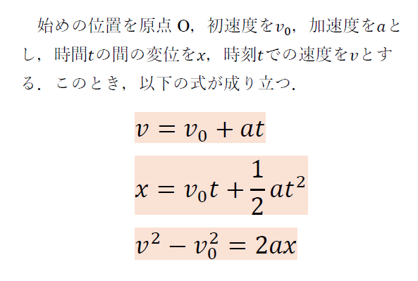
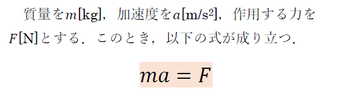
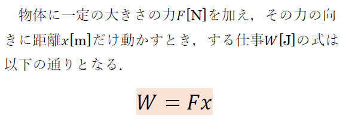
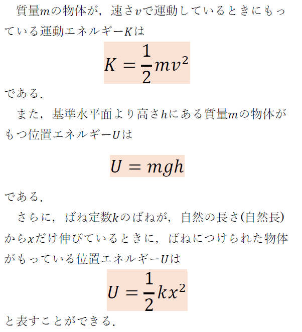
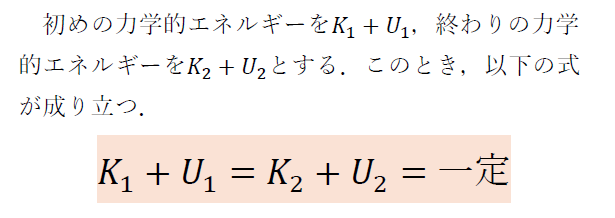
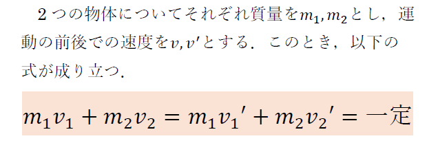
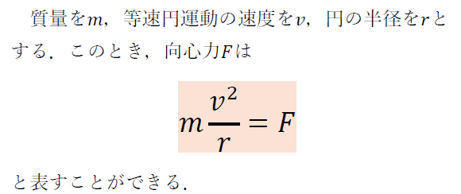
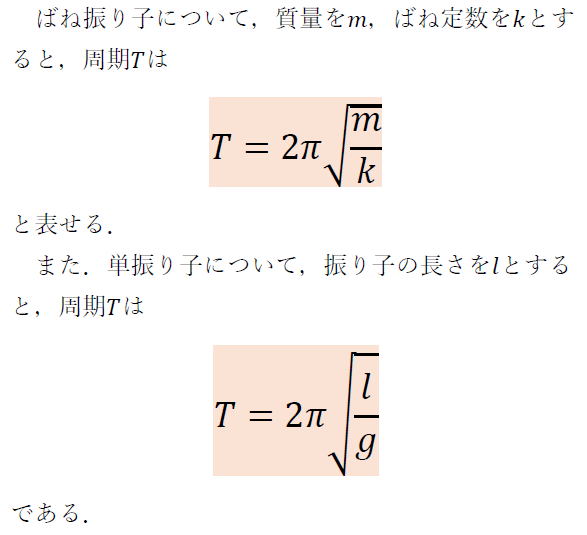
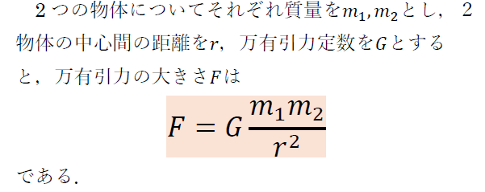
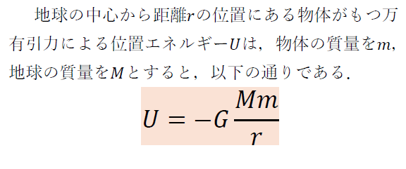

力学
等加速度直線運動
等加速度直線運動は，加速度が一定でかつ，一直線上を移動する運動のことである．
等加速度直線運動を考えることで，速度が変わる運動についても考えることができる．
等加速度直線運動には3つ公式があり，それを以下に示す．余談だが，この公式は加速度が一定であれば使えるため，加速度の値が0で一定の等速直線運動にも使うことができる．

運動の3法則
運動の3法則について紹介する．
運動の第一法則は，慣性の法則と呼ばれる．慣性とは物体が運動の状態を保とうとする性質である．
運動の第二法則は，運動の法則と呼ばれる．この中には非常に重要な公式である運動方程式が含まれている．その公式を以下に示す．

運動の第三法則は，作用反作用の法則と呼ばれる．この法則では，力は2つの物体間で互いに及ぼしあっているということを説明している．
仕事
物体に一定の大きさの力を加えて物体をある距離だけ動かしたとき，力が物体に仕事をしたと表現できる．
仕事には，仕事の原理というものがある．動滑車などの道具を使えば必要な力を小さくできるが動かす距離が長くなり，結局仕事の量が変わらないということである．
仕事の公式を以下に示す．

運動エネルギー
位置エネルギー
運動エネルギーとは，運動する物体がどの程度エネルギーをもっているか示したものである．
例えば，同じボールが時速80kmと時速100kmで飛んできたとき，直感的に時速100kmのボールのほうが運動エネルギーが大きいと考えることができる．
位置エネルギーとは，物体がある高さに存在することで蓄えられるエネルギーのことである．
例えば，同じ質量をもつ物体をどの高さから落とすか考えるとき，直感的に高いところから落としたほうが床に大きな衝撃が加わると考えることができる．
また，位置エネルギーを考える際は，基準水平面という位置エネルギーの基準点を自分で設定する必要がある(ただし，問題などで指定があればそれに従う必要あり)．この基準点は自由に設定することが可能である．
位置エネルギーからは少し外れるが，高校物理では，ばねによる弾性エネルギーを位置エネルギーと見なして考える問題が多い．
それぞれについて公式を以下に示す．

力学的エネルギー
力学的エネルギーとは，物体がもつ運動エネルギーと位置エネルギーの総和のことである．
力学的エネルギーという概念は，力学的エネルギー保存則を考えるうえで重要である．
力学的エネルギー保存則とは，内力だけが仕事をする物体の運動について，運動の前後で力学的エネルギーが一定になる(保存される)という法則である．ここで，内力とは重力や作用反作用の力などがあげられる．逆に，外力(摩擦力や空気抵抗力など)が作用していると成り立たない．
力学的エネルギー保存則の公式を以下に示す．

運動量保存則
運動量とは，物体の運動の勢いを表すベクトル量のことである．
運動量は，質量と速度の積によって求めることが可能である．
運動量保存則とは，物体が内力のみを及ぼしあっている(外力を受けていない)とき，運動の前後で全体の運動量が変化しないという法則のことである．
力学的エネルギー保存則と同様，外力を受けていると使えないということに注意してほしい．
運動量保存則について公式を以下に示す．

等速円運動
等速円運動とは，円周上を一定の速さで回る運動のことである．
等速円運動に必要な力として，向心力というものがある．向心力とは，向心加速度を生じさせる力であり，力の向きは常に円の中心方向である．
この事実は入試や試験で良く問われる内容なので覚えておくことを強く推奨する．
等速円運動の運動方程式を以下に示す．

単振動
単振動とは，等速円運動についてある1方向(x軸方向やy軸方向など)から見たときの運動である．
1方向から見た運動であるため，一次元空間で周期的に運動をする性質をもつ．
単振動の問題で特に重要となる公式には，ばね振り子と単振り子の周期の公式があげられる．
それぞれについて公式を以下に示す．
これらの公式は単振動の定義から導出可能なのでネットや教科書で調べて一度導出の過程を学ぶことをお勧めする．

万有引力の法則
万有引力とは，質量がはたらくすべての物体について発生する，引き付けあう力である．
私たちが地球に引き付けられている力の正体は万有引力であり，重力の正体は万有引力と考えてよい．(厳密に言えば，重力は万有引力と地球の自転によって生じる遠心力の和を指す．しかし，遠心力の影響を最も受ける赤道上でも遠心力の大きさは万有引力の1/300程度で十分小さいため，高校物理の範囲では重力＝万有引力とみなされることがほとんど)
万有引力の公式を以下に示す．

万有引力による
位置エネルギー
位置エネルギーについておさらいすると，位置エネルギーは物体がある高さに存在することで蓄えられるエネルギーと説明した．また，位置エネルギーは基準点を自分で設定する必要があるという特徴があった．
しかしながら，万有引力の位置エネルギーに関しては，ほとんどの場合無限遠を基準に位置エネルギーを取ることが多い．そのため，問題に指示がなかったとしても無限遠を基準に位置エネルギーを取ることを強く勧める．
万有引力による位置エネルギーについての公式を以下に示す．
